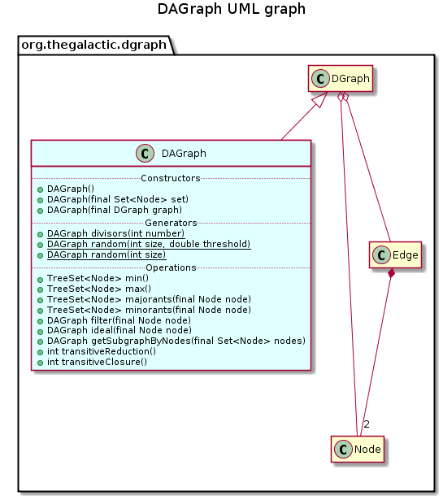

N - Node content typeE - Edge content type
Do we forbid to add an edge that breaks acyclic property by verifying that the destination node has no successors? May be a DAGraph could contain a ConcreteDGraph and export only interesting method by proxy
public class DAGraph<N,E> extends ConcreteDGraph<N,E>
This class extends the representation of a directed graph given by class ConcreteDGraph for directed acyclic graph (DAG).
The main property of a directed acyclic graph is to be a partially ordered set (poset) when transitively closed, and a Hasse diagram when transitively reduced.
This property is not ensured for components of this class because it would require a checking treatment over the graph whenever a new edge or node is added. However, this property can be explicitely ckecked using method AbstractDGraph.isAcyclic().
This class provides methods implementing classical operation on a directed acyclic graph: minorants and majorants, filter and ideal, transitive reduction, ideal lattice, …
This class also provides a static method randomly generating a directed acyclic graph, and a static method generating the graph of divisors.

| Constructor and Description |
|---|
DAGraph()
Constructs a new DAG with an empty set of node.
|
DAGraph(ConcreteDGraph<N,E> graph)
Constructs this component as a copy of the specified directed graph.
|
DAGraph(SortedSet<Node<N>> set)
Constructs this component with the specified set of nodes, and empty treemap of successors and predecessors.
|
| Modifier and Type | Method and Description |
|---|---|
DAGraph<N,E> |
filter(Node<N> node)
Returns the subgraph induced by the specified node and its successors in the transitive closure.
|
DAGraph<N,E> |
getSubgraphByNodes(Set<Node<N>> nodes)
Returns the subgraph of this component induced by the specified set of nodes.
|
DAGraph<N,E> |
ideal(Node<N> node)
Returns the subgraph induced by the specified node and its predecessors in the transitive closure.
|
SortedSet<Node<N>> |
majorants(Node<N> node)
Returns the set of majorants of the specified node.
|
SortedSet<Node<N>> |
max()
Returns the maximal elements of this component.
|
SortedSet<Node<N>> |
min()
Returns the minimal elements of this component.
|
SortedSet<Node<N>> |
minorants(Node<N> node)
Returns the set of minorants of the specified node.
|
int |
transitiveClosure()
Computes the transitive closure of this component.
|
int |
transitiveReduction()
Computes the transitive reduction of this component.
|
addEdge, addEdge, addEdge, addNode, clone, complementary, containsEdge, containsEdge, containsNode, getEdge, getEdges, getNode, getNodeByContent, getNodeByIdentifier, getNodes, getPredecessorEdges, getPredecessorNodes, getPredecessors, getStronglyConnectedComponent, getSubgraphByEdges, getSuccessorEdges, getSuccessorNodes, getSuccessors, reflexiveClosure, reflexiveReduction, removeEdge, removeEdge, removeNode, removeNodes, setNodes, setPredecessors, setSuccessors, sizeEdges, sizeNodes, transposegetSinks, getWells, isAcyclic, save, topologicalSort, toStringpublic DAGraph()
Constructs a new DAG with an empty set of node.
public DAGraph(SortedSet<Node<N>> set)
Constructs this component with the specified set of nodes, and empty treemap of successors and predecessors.
set - the set of nodespublic DAGraph(ConcreteDGraph<N,E> graph)
Constructs this component as a copy of the specified directed graph.
Acyclic property is checked for the specified DAG. When not verified, this component is construct with the same set of nodes but with no edges.
graph - the ConcreteDGraph to be copiedpublic final SortedSet<Node<N>> min()
Returns the minimal elements of this component.
public final SortedSet<Node<N>> max()
Returns the maximal elements of this component.
public final SortedSet<Node<N>> majorants(Node<N> node)
Returns the set of majorants of the specified node.
Majorants of a node are its successors in the transitive closure
node - the specified nodepublic final SortedSet<Node<N>> minorants(Node<N> node)
Returns the set of minorants of the specified node.
Minorants of a node are its predecessors in the transitive closure
node - the specified nodepublic final DAGraph<N,E> filter(Node<N> node)
Returns the subgraph induced by the specified node and its successors in the transitive closure.
node - the specified nodepublic final DAGraph<N,E> ideal(Node<N> node)
Returns the subgraph induced by the specified node and its predecessors in the transitive closure.
node - the specified nodepublic DAGraph<N,E> getSubgraphByNodes(Set<Node<N>> nodes)
Returns the subgraph of this component induced by the specified set of nodes.
The subgraph only contains nodes of the specified set that also are in this component.
getSubgraphByNodes in class ConcreteDGraph<N,E>nodes - The set of nodespublic int transitiveReduction()
Computes the transitive reduction of this component.
The transitive reduction is not uniquely defined only when the acyclic property is verified. In this case, it corresponds to the Hasse diagram of the DAG.
This method is an implementation of the Goralcikova-Koubeck algorithm that can also compute the transitive closure. This tratment is performed in O(n+nm_r+nm_c), where n corresponds to the number of nodes, m_r to the numer of edges in the transitive closure, and m_r the number of edges in the transitive reduction.
public int transitiveClosure()
Computes the transitive closure of this component.
This method overlaps the computation of the transitive closure for directed graph in class ConcreteDGraph with an implementation of the Goralcikova-Koubeck algorithm dedicated to acyclic directed graph. This algorithm can also compute the transitive reduction of a directed acyclic graph.
This treatment is performed in O(n+nm_r+nm_c), where n corresponds to the number of nodes, m_r to the numer of edges in the transitive closure, and m_r the number of edges in the transitive reduction.
transitiveClosure in class ConcreteDGraph<N,E>Copyright © 2010–2016 The Galactic Organization. All rights reserved.